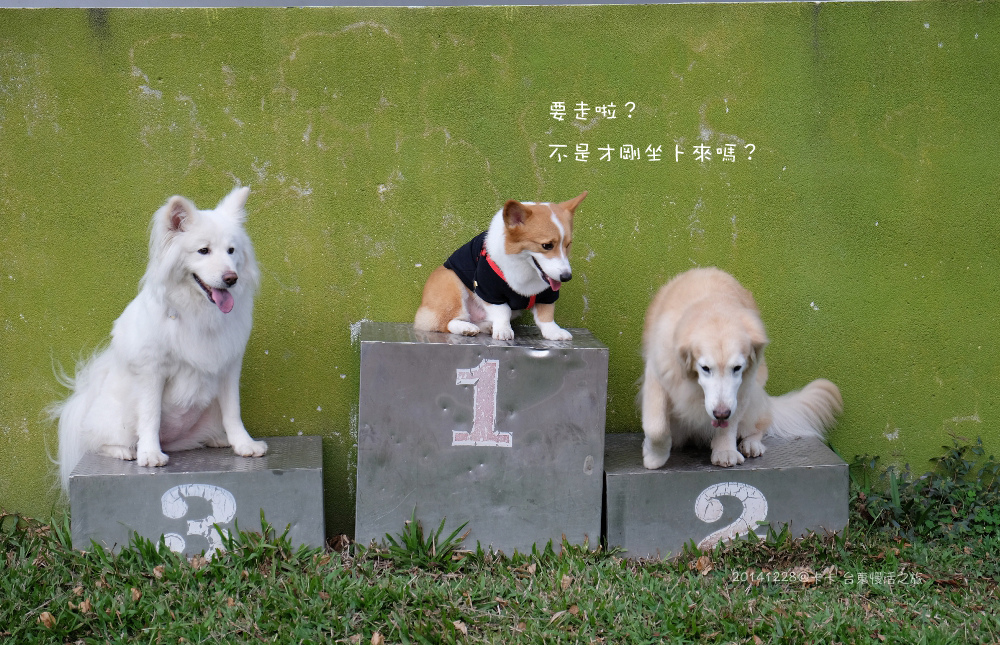
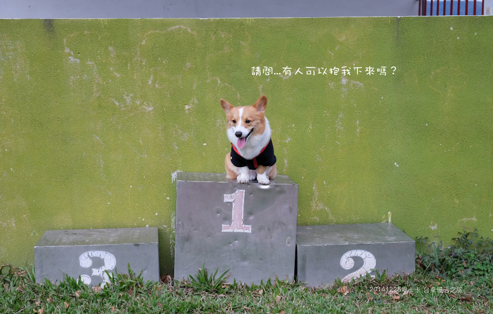

來交去年的作業嘍!
2014年底猛哥突然冒出點假期可以利用，知道yo家要去台東longstay
想想這麼多天實在太難得了，決定帶卡卡當跟屁蟲去台東找yo咩
而我家只有過衝過一次台東，而且還是當日來回，哈哈 瘋子

雖然開過一次台東，但是是半夜出發，感覺沒有開很久也不累
這次中午從台北出發，到台東已經是晚上七點...
台東真的好遠～開的我屁股好痛，一直想跳車＠＠
好不容易到了民宿，一停好車超嚇克der!!
民宿旁竟然有個小廟會，辦桌之外還外加現場卡拉ok（崩潰）
房間隔音又超差，阿公阿罵的歌聲就醬迴盪在我們的房間.....

頭皮發麻的去問民宿老闆，還好活動10點會結束，行季丟了立刻衝出門找yo家
第一餐跟yo麻約在天地人吃晚餐
開了半天的車吃到這頓真的好感動啊～怎麼那～摸～好～吃!!（是我太餓嗎？XD）
重點價格跟台北比根本佛心來著，吃的超滿足，吃完立馬跟yo麻說我五天都可以來這吃 哈哈

這次住的是六人房，其實是因為沒有四人房了，老闆以四人房價格給我們六人房住
我們很晚才訂房，選擇也不多，想說只要乾淨能睡就好（訂房時發現台東的民宿都很僕素:D)
可惜這房內隔音很差，插座很少不方便使用，其它就一般般

嘖～這沒開車的傢伙，在老木洗澡的時候就鑽進自己的窩先睡了（好沒義氣 ）
怪不得yo麻一直說我去五天很少，第一天就醬....結束了 XD
（但誰可以像你家一去就10天的啦!厚）

＝＝＝＝＝＝＝＝＝＝＝＝＝＝＝＝＝ Day2 ＝＝＝＝＝＝＝＝＝＝＝＝
隔天早上我跟卡卡早起，老北還在床上昏迷
民宿旁邊就是海，卡卡一出房間就一個人一直衝往海邊不知在衝什麼
然後就停住望向遠方（拷～許摩卡你真的是很會享受吶你）
其實浪有點大，我都怕他會被捲下去，但他會游泳啊怕什麼？XD

民宿的狗狗，叫什麼忘了
阿呆？阿瓜？呆呆？瓜瓜？（眾：你不要以貌取狗哦你XD）
唉呦～時間太久了啦～真的完全忘了
不過他個性很好，膽子有點小，知道卡卡不喜歡被聞試過就不會再主動靠近（好乖）
（4/1補上：我想起來惹～～他叫阿寶啦！XD）

這次來台東我們一家三口完全就打算放空跟著yo麻就對了，什麼功課都沒做 XD
出發前yo麻這在地人(?)一直丟資料出來問我想去那，真的很怕我們無聊
因為我一直放空，她快氣屎了 
第二天yo咩出動啦～徐小yo好開心
冏咩沒有不開心，她就冏臉啊～不然咧 XDXD

被yo麻抓來一間很不搭的地方買咖啡
是服飾店耶～笑屎! 這只有在地人才會知道這種地方吧！

好奇妙的一間店，有賣衣服，賣一些日韓零食（幾乎超市都找的到的餅乾XD）加下午茶
複合式的意思(?)，但它的咖啡是還蠻好喝的～很順口
咖啡買完後還有去買餡料超厚實的紅豆麵包，出爐後根本秒殺，超好吃!!
在店裡拿到我就開嗑了，沒手沒空拍照 XD

這天有當地的小市集可以晃晃 2626農村市集
去了才發現市集好短，如果是手刀快走完全不逛的話大概1分鐘就走完了吧!?
整個逛下來只有對這些木製品有興趣，跟yo麻各買了一個帶回家
老闆還自動降價給我 哈哈哈
這玩意兒如果拿到台北賣，oh～一定又是天價了難入手

付了錢，老闆現場加工幫我們抹上食用蠟，醬木頭才會防水防油不會爛

卡卡：媽～這鏡子不行啦！拍起來腳好短....XDDD

又讓我如願以償牽著兩位公主
大毛孩拉的力道真的很有感 尤其是徐小yo看到吃的時候 哈哈哈

卡卡這一路就一直在聞yoyo（yo..你是不是很多天沒洗澡蛤XD）
到底是什麼味道啦！卡～你是沒看過輕熟女是唄～嘖嘖

大人逛完換小朋友的時間，準備到巒山國小跑跑
感覺就是人數不多的小學校，哈 教室沒幾間

這趟台東行發現阿卡卡跟yo咩相當合拍，出門完全“屁撕“
（那時候還不知咩會殺人 XD）
yoyo不用說了，卡卡這麼盧都不會生氣也不會不開心

我家這個小短腿整個很黏跟很緊，是說卡卡好像真的很久沒遇到女生了 哈哈哈
yoyo把卡卡的腳側步行訓練的超好啊～笑倒
從頭到尾沒離開過yo姐結超過3步距離，好喜歡好喜歡

卡卡喜歡的狗狗都會想啄啄人家耳朵-->什麼怪癖呀你
真的很黏TT

難得呀～來到校園也不追鳥也找蝴蝶的
就專心當yoyo的跟屁蟲

猴～～偷親!!!>/////< （這張是yo麻拍的）

卡卡聞成醬，我都想去聞一下yo到底散發出什麼味道 XD
許摩卡，你自己不給其它狗狗聞，然後聞人家聞的這麼誇張，你好意思嗎你

兩秒yo不是叫假的
卡卡跟冏咩已經坐好等很久了，yoyo上來，媽媽一轉身她就立馬想落跑 XD

兩個姐結很不夠意思，腿長就各自先走了
留下呆呆的弟弟..........XD

台東好熱，根本是夏天了，超適合吃冰的
這間是天地人老闆推薦的，隔天立馬來嚐鮮

桂花樹下，古早味的風格


旁邊櫃子有提供 玫瑰鹽、梅粉、薑汁供客人使用
猛哥挺喜歡加塩的感覺，他覺得蠻好吃的
我個人是沒有特別的感覺好吃啦～就鹹鹹的嘛

但它的料給的很多很實在，好吃價錢也很公道（台東的價格真的很有良心）

認識yo家都知，他們家是走極悠閒路線（跟卡內家根本是兩個極端XD）
以上幾個點已經把他們一家四口累壞(?) 所以吃完冰就解散回民宿休息，給小朋友吃晚餐
反正這次來台東我們也打算走輕鬆玩法，
只要我的寶貝卡卡有玩的開心就好，大人有吃到美食就ok
這天晚餐就約晚點吃，本來要吃的那間米苔目沒開....（yo麻又怒罵我帶賽XDDD）
結果意外查到有分店就殺來吃了（逢凶化吉履試不爽耶，神奇）
其實也算好吃的米苔目，湯頭也不錯，但根據yo麻舌頭表示，另一間比較好吃

以上 摩卡卡特派員，台東天氣晴報導 
＝＝＝＝＝＝＝筆記美食資訊＝＝＝＝＝＝＝
天地人手創料理‧居酒屋
營業時間 17：00~02：00 (週一公休)
電話：(089)333-170
地址：台東市長沙街342號1樓
＝＝＝＝＝＝
桂花樹下
營業時間 15：00~23：00
地址：臺東市鐵花里福建路316之1號